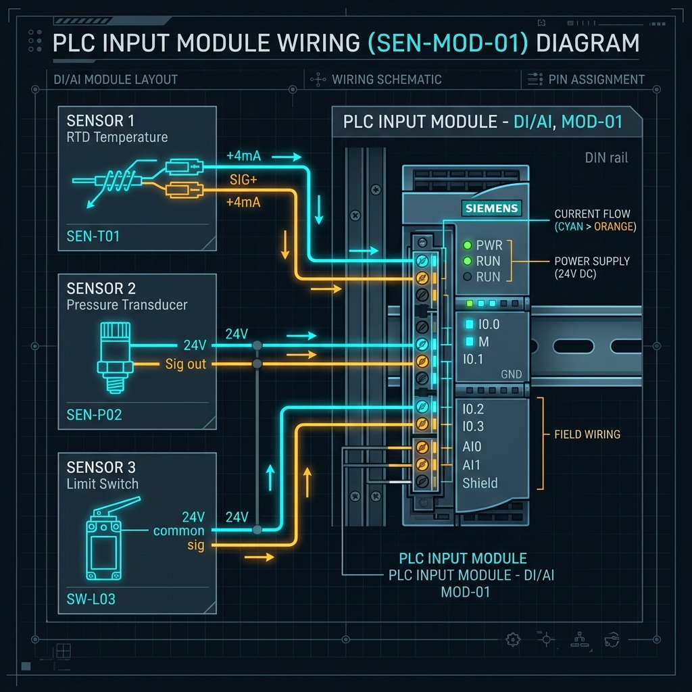

Conexiones Sinking y Sourcing en PLC: Guía Técnica de Cableado de Entradas y Salidas
Publicado por el Equipo de Ingeniería de Robologix Automation | Saltillo, Coahuila
Resumen de Ingeniería:
En automatización industrial a 24VDC, los términos Sourcing (Fuente) y Sinking (Drenaje/Hundimiento) definen la dirección del flujo de corriente convencional en un circuito eléctrico. Un dispositivo Sourcing suministra corriente positiva (+24VDC) hacia la carga, mientras que un dispositivo Sinking drena la corriente hacia la masa o común negativo (0VDC). Para que un circuito de entrada o salida de PLC funcione correctamente, siempre debe conectarse un componente Sourcing con uno Sinking (regla de los opuestos).

Esquema conceptual del sentido de la corriente convencional en módulos I/O de PLC.
1. La Regla de Oro del Cableado en Corriente Directa (24VDC)
Para recordar fácilmente cómo interconectar un sensor o actuador a una tarjeta de PLC, utilice la Regla del Agua y el Drenaje:
- Sourcing (+24VDC): La corriente sale de la terminal hacia el circuito. Funciona como la "llave del agua".
- Sinking (0VDC / Común): La corriente entra por la terminal hacia el punto de menor potencial. Funciona como el "drenaje".
2. Entradas de PLC: NPN vs. PNP
Sensores PNP (Sourcing Output)
Al detectarse la presencia del objeto, el sensor commuta la línea de señal a +24VDC. Requiere que la tarjeta de entrada del PLC sea de tipo Sinking (con punto común a 0VDC). Es el estándar dominante en Norteamérica y Europa por razones de seguridad eléctrica.
Sensores NPN (Sinking Output)
Al activarse, el sensor commuta la línea de señal a 0VDC (Tierra/Común). Requiere que la tarjeta de entrada del PLC sea de tipo Sourcing (con punto común a +24VDC). Es el estándar habitual en maquinaria proveniente de Japón y Asia.
3. ¿Por qué es Crítico para la Ciberseguridad Física de Planta?
En un sistema PNP / Sourcing, si el cable de señal de un sensor se pela y toca la estructura metálica aterrada de la máquina (0VDC), el fusible o la fuente de alimentación se disparará, pero la entrada del PLC permanecerá en FALSO (0).
En cambio, en un sistema NPN / Sinking, si el cable de señal hace contacto con el chasis aterrado, el PLC interpretará erróneamente la entrada como VERDADERO (1), lo que puede provocar el arranque no deseado de una prensa o cilindro neumático. Por ello, la especificación de diseño en las plantas de la Región Sureste de Coahuila favorece ampliamente la arquitectura PNP.
Asistencia Técnica Robologix Automation
Inspección y corrección de comunes flotantes o discrepancias NPN/PNP en campo.
Actualización de diagramas esquemáticos de I/O en EPLAN o AutoCAD Electrical.
Diagnósticos presenciales rápidos para plantas en Saltillo y Ramos Arizpe.
Artículos Técnicos Relacionados:
¿Problemas de Fallas Falsas o Cableado de Sensores en Planta?
En Robologix Automation realizamos levantamiento de tableros de control, corrección de cableado I/O y actualización de planos eléctricos en Saltillo y Ramos Arizpe.
Solicitar Soporte Técnico